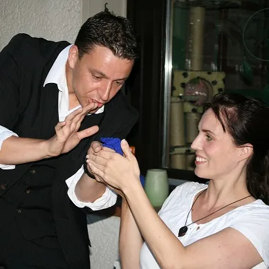
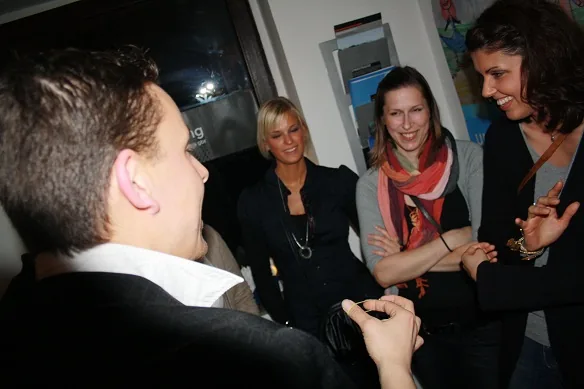
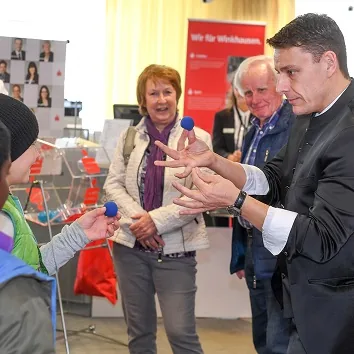
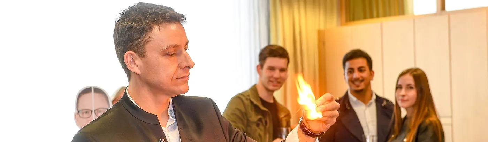
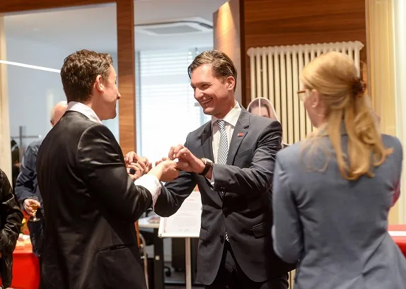
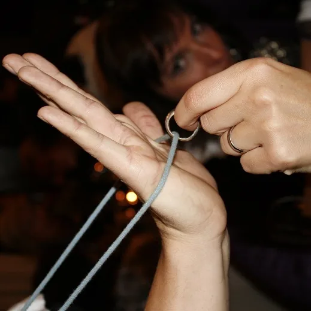

Magie beginnt dort, wo niemand sie erwartet – mitten unter Ihren Gästen, mit Charme, Humor und überraschenden Tricks. Ganz ohne Bühne.
Ein Walk-Act ist ein interaktives Format, bei dem ich aktiv durch die Menge gehe, mich unter Ihre Gäste mische und direkt dort zaubere, wo die Aufmerksamkeit entsteht – ohne Bühne, ohne festen Standort.
Das macht den Walk-Act besonders lebendig und dynamisch: kein fester Programmteil, keine Lichttechnik nötig, dafür direkte Interaktion und spontane Magie zwischen den Menschen.

Ein Publikumsmagnet für Jung und Alt.
Ziehen Sie Aufmerksamkeit zu Ihrem Stand.
Lockere Stimmung zwischen den Programmpunkten.
Der charmante Einstieg in Ihr Event.

Zauberer LIAR
Zauberer LIAR
Zauberer LIAR
Zauberer LIAR
Zauberer LIARRufen Sie direkt an oder schreiben Sie mir – ich melde mich schnell mit einem unverbindlichen Angebot.